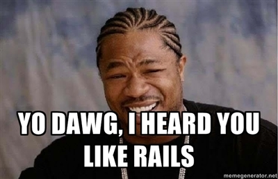
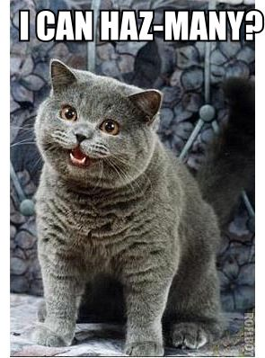
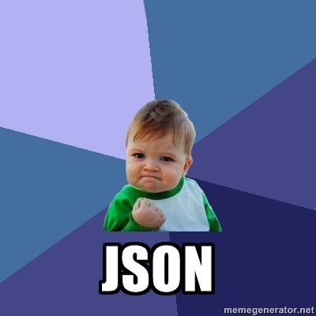
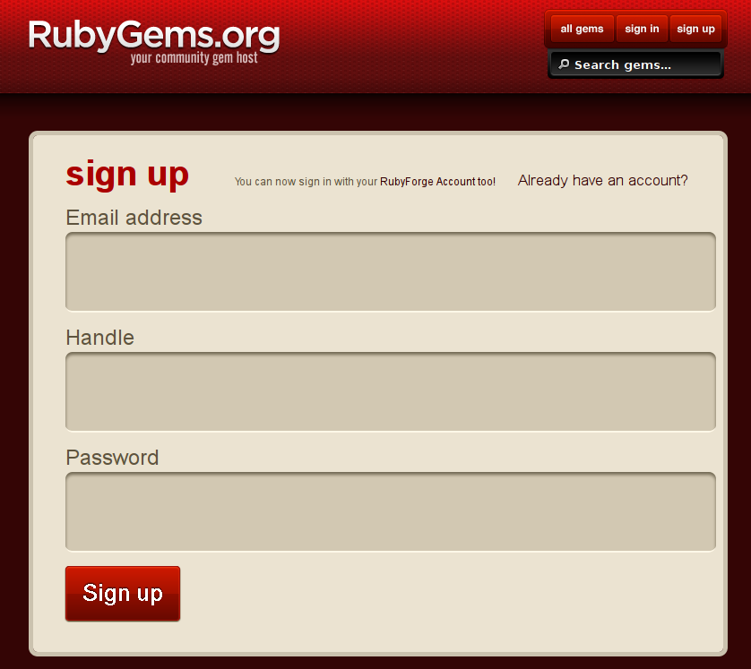
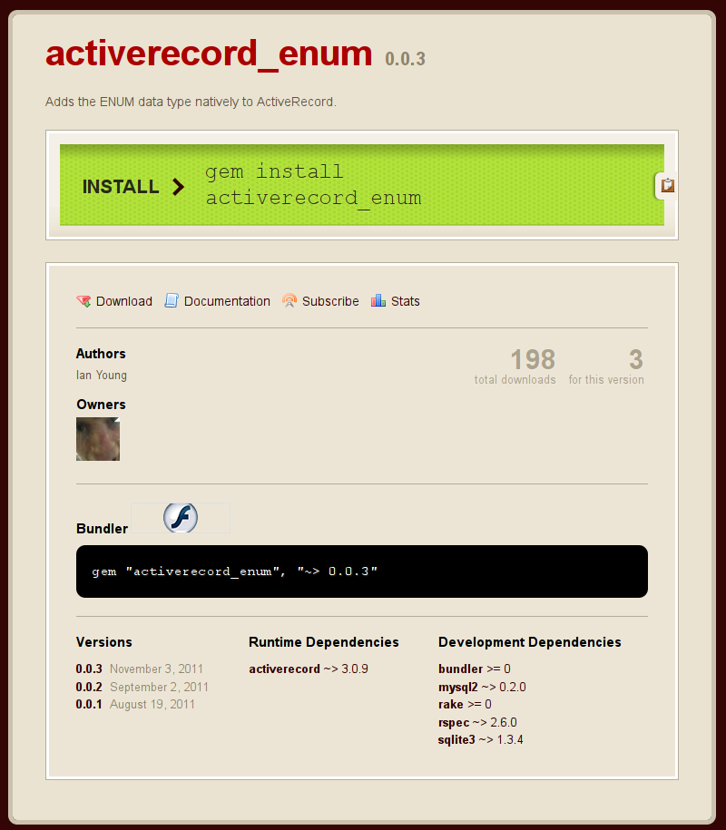

Rails up your Backbone
Backbone.js
- Frontend Javascript library
- Models and views
- Lightweight
My one complaint:
A couple fiddly bits
Step one
CoffeeScript
class window.Star extends Backbone.Model
defaults:
ships: 1
industry: 0
eta: null
projected_ships: ->
@get("ships") +
(@get("eta") * @get("industry") / 12)
extra_ship_probability: ->
Math.round 100 * (@projected_ships() -
Math.floor @projected_ships())Step two
Relational models

class window.Battle
extends Backbone.RelationalModel
relations: [{
type: Backbone.HasOne
key: "defender"
relatedModel: "Star"
}]
defaults:
defender:
ships: null
ws: 1
defender_ships_remaining: ->
@get("defender").get("ships") - 10Step three
# $('#myform').formParams()
{
turn: 5
defender : {
ships: 25
ws: 18
}
}

Bringin' it all together
<div id="content">
<form>
<label>Defender ships:
<input type="number"
name="battle[defender][ships]"
value="" />
</label>
<label>Defender WS:
<input type="number"
name="battle[defender][ws]"
value="" />
</label>
</form>
</div>class window.BattleView
extends Backbone.View
el: "form"
events: {
"keyup input": "updateModel"
}
updateModel: ->
this.model.set(
$("form").formParams()["battle"]
)Sound familiar?
class BattleController
< ApplicationController
def update
@battle = Battle.find params[:id]
@battle.update_attributes(
params[:battle]
)
end
endGems I've made recently
activerecord_enum
Meet MySQL ENUM
$ mysql> desc gemstones;
+-------+--------------------------------+------+-----+---------+
| Field | Type | Null | Key | Default |
+-------+--------------------------------+------+-----+---------+
| size | enum('small','large') | YES | | NULL |
+-------+--------------------------------+------+-----+---------+
$ mysql> insert into gemstones values ('large');
Query OK, 1 row affected (0.00 sec)
Non-standard SQL?!?!
Well, yes
Not the only option
- A string column with an index
validates_inclusion_of- nofxx/symbolize
nofxx/symbolize
class Gemstone
symbolize :size, \
:in => [:small, :large]
end
@gemstone.size
# => :smallWhy use ENUM?
- Performance(...)
- DB structure
- Other codebases
- Legacy support
# schema.rb
create_table "gemstones" do |t|
t.column "size", "enum('small','large')"
endSo far, so good
[use rake]
But wait...
TODO
Arrrrrrggggh
Solution
Tell ActiveRecord about enums
# schema.rb
create_table "gemstones" do |t|
t.enum "size", :limit => ["small","large"]
endWorks with other database adapters, too
So please put the weapons down
Does
- Rails 3.0.x
- mysql2, sqlite
- ENUM and SET types
Should add
- Rails 3.1.x
- Other DB adapters
active_set
Meet MySQL SET
$ mysql> desc balloons;
+-------+--------------------------+------+-----+---------+
| Field | Type | Null | Key | Default |
+-------+--------------------------+------+-----+---------+
| gas | set('helium','hydrogen') | YES | | NULL |
+-------+--------------------------+------+-----+---------+
$ mysql> insert into balloons values ('helium');
Query OK, 1 row affected (0.00 sec)
$ mysql> insert into balloons values ('helium,hydrogen');
Query OK, 1 row affected (0.00 sec)
$ mysql> select count(*) from foo where find_in_set('hydrogen',gas);
+----------+
| count(*) |
+----------+
| 1 |
+----------+
1 row in set (0.00 sec)
Non-standard SQL?!?!
Well, yes
...I was on a roll
class Balloon < ActiveRecord::Base
acts_as_set :gasses, ["helium","hydrogen"]
end
Balloon.create :gasses=>["helium","hydrogen"]Remember
Use with activerecord_enum to keep your schema clean
Does
- Not much
What should I add?
- Probably validations
- Support find_in_set(?)
- Does anyone even use these?
Bonus slide
$ mysql> desc my_table;
+-----------+----------------------------------------+
| Field | Type | Null | Key | Default |
+-----------+-----------------+------+-----+---------+
| special | set('yes','no') | YES | | NULL |
+-----------+-----------------+------+-----+---------+
tap_out
Problem
I have a project with Ruby + PHP code.
The phpunit tests never get run.
Solution
Run phpunit tests from rake.
Extra mile
Hook directly into Test::Unit
Test Anything Protocol
$ phpunit --tap .
TAP version 13
ok 1 - ValidationTest::testBadPhoneParams with data set #0 ('')
ok 2 - ValidationTest::testBadPhoneParams with data set #1 ('abcdefgh')
ok 3 - DbConnectionTest::testGetSingleton
not ok 4 - Failure: DbConnectionTest::testTransactionRollback
---
message: 'Failed asserting that <boolean:false> is not equal to <boolean:false>.'
severity: fail
...
ok 5 - DbConnectionTest::testTransactionCommit
1..5
require 'test_helper'
require 'test/phpunit'
class PHPTest < ActiveSupport::TestCase
extend Test::PHPUnit
phpunit "test/phpunit/", \
:configuration => 'test/phpunit.xml'
endWhat else should it do?
- Perl (probably easy)
- Other languages
Greasemonkey
- Firefox extension
- Execute your own Javascript on matched pages
// ==UserScript==
// @name Github autocomplete
// @namespace iangreenleaf.com
// @description Autocompletion for @-mentions on GitHub
// @include https://github.com/*
// @require http://.../1.6.4/jquery.min.js
// ==/UserScript==
$(".comment-form").keyup(function(e) {
// ...
});Greasemonkey scripts work on Chrome
Except a few things
Like @require.
Chrome extensions
Turns out packaging them isn't that hard.
manifest.json
{
"name": "My Extension",
"version": "2.1",
"description": "Sample plugin.",
"permissions": ["https://*.google.com/"],
"content_scripts":
[{ "js": ["jquery.js", "myscript.js"] }]
}I am so lazy
Let's package it automatically
Use the Greasemonkey metadata and a couple assumptions.
To Do
- Most of the actual work
- Host from GitHub
- Auto-updating
- Maybe export to dotjs as well
- CoffeeScript?
Ultra-minimalist gem bootstrapping
Let's make a gem!
A little intimidating...?
Nahhhhh
Hoe, Jeweler
- Gem management gems
- Comprehensive
But...
- Kinda pushy
- I have to require the jeweler gem inside my gem
- Kinda... complicated
Suddenly we're back to intimidated
There are some other options out there
But nothing that gets me particularly excited
There's another way
The tool is coming...
...from INSIDE YOUR COMPUTER

$ bundle gem buzzfizz
create buzzfizz/Gemfile
create buzzfizz/Rakefile
create buzzfizz/.gitignore
create buzzfizz/buzzfizz.gemspec
create buzzfizz/lib/buzzfizz.rb
create buzzfizz/lib/buzzfizz/version.rb
Initializating git repo in /home/youngian/code/buzzfizz
# Rakefile
require 'bundler'
Bundler::GemHelper.install_tasks# .gitignore
*.gem
.bundle
Gemfile.lock
pkg/*
# lib/buzzfizz/version.rb
module Buzzfizz
VERSION = "0.0.1"
end# lib/buzzfizz.rb
module Buzzfizz
# Your code goes here...
end# Gemfile
source "http://rubygems.org"
# Specify your gem's dependencies
# in buzzfizz.gemspec
gemspec# buzzfizz.gemspec
# -*- encoding: utf-8 -*-
$:.push File.expand_path("../lib", __FILE__)
require "buzzfizz/version"
Gem::Specification.new do |s|
s.name = "buzzfizz"
s.version = Buzzfizz::VERSION
s.platform = Gem::Platform::RUBY
s.authors = ["TODO: Write your name"]
s.email = ["TODO: Write your email address"]
s.homepage = ""
s.summary = %q{TODO: Write a gem summary}
s.description = %q{TODO: Write a gem description} s.rubyforge_project = "buzzfizz"
s.files = `git ls-files`.split("\n")
s.test_files = `git ls-files -- {test,spec,features}/*`.split("\n")
s.executables = `git ls-files -- bin/*`.split("\n").map{ |f| File.basename(f) }
s.require_paths = ["lib"]
endWe'll probably want to add a couple things
s.add_dependency "activerecord", "~> 3.0.9"
s.add_development_dependency "mocha"Let's use it
$ rake -T
rake build # Build buzzfizz-0.0.2.gem into the pkg directory
rake db:prepare # Prepare the databases.
rake default # Default: run all unit tests.
rake install # Build and install buzzfizz-0.0.2.gem into
# system gems
rake release # Create tag v0.0.2 and build and
# push buzzfizz-0.0.2.gem to Rubygems
rake spec # Run the test suite.
rake spec:all # Run the test suite for all DBs.

Authorize your machine
$ gem push
Email:
Password:
$ rake release
buzzfizz 0.0.2 built to pkg/buzzfizz-0.0.2.gem
Tagged v0.0.3
Pushed git commits and tags
Pushed buzzfizz 0.0.2 to rubygems.org

Congratulations!
You're a gem author!